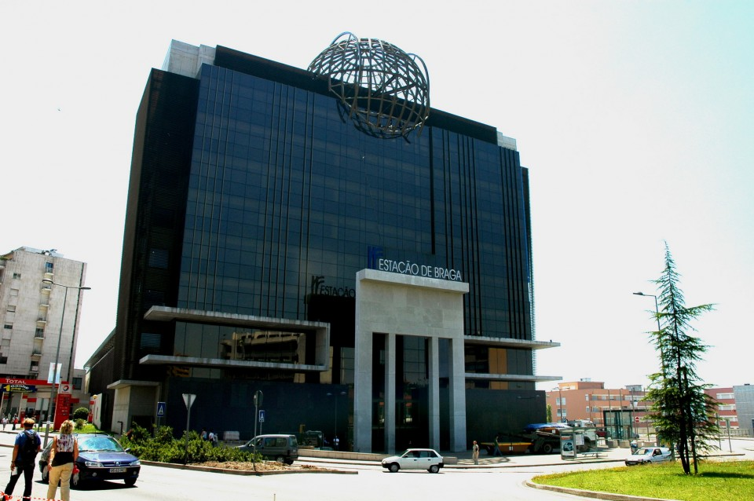
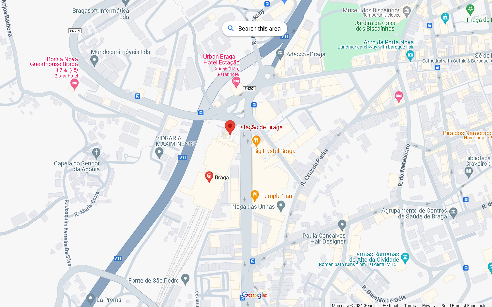
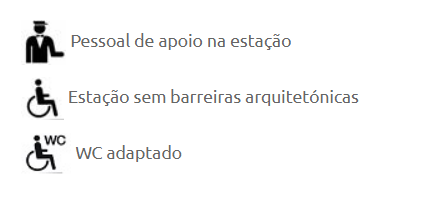

Estação de Braga
Localização:
A Estação de Comboios de Braga está situada na Praça da Estação, no centro da cidade. Faz parte da rede ferroviária nacional de Portugal, a estação de Braga é uma estação ferroviária moderna e que vem com o intuito de um projecto de melhoria da linha do Porto – Braga. É uma obra de concepção diferente, em que se destacam o metal e o vidro.

Localização da Estação de Comboios de Braga: https://www.google.com/maps?q=Estação+de+Comboios+de+Braga

Acessibilidade:
A estação de comboios de Braga oferece diversas instalações e comodidades para os passageiros. Isso inclui bilheteiras, salas de espera, WC's, cafetarias, lojas e um posto de informações turísticas. A estação foi planejada propositadamente sem barreiras arquitetónicas, com WC's adaptados, e é possível ser acompanhado por um funcionário de apoio da estação

Horários e Bilhetes
Os horários dos comboios podem variar dependendo do destino e da época do ano. É recomendável verificar os horários atualizados dos comboios com antecedência, seja por meio do site oficial da CP ou nas próprias bilheterias da estação. Os bilhetes podem ser adquiridos na estação, online ou através de máquinas de venda automática disponíveis no local.
É importante observar que as informações acima são gerais e podem estar sujeitas a alterações. Caso precise de informações mais detalhadas, recomenda-se verificar o site oficial da CP ou entrar em contato diretamente com a estação de comboios de Braga para obter informações atualizadas sobre horários, destinos e serviços específicos.
Linha de Atendimento CP: 808 109 110
CP Braga: https://www.cp.pt/passageiros/pt/consultar-horarios/estacoes/braga